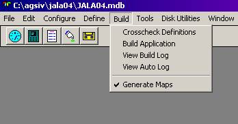
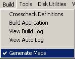

Once all the application requirements are entered into AGS IV, the application must be compiled, linked, and uploaded into the aircraft’s airborne unit. The transfer to the airborne unit is done by first copying the compiled and linked application to a media supported by the airborne unit, and then carrying the media to the aircraft. Most Teledyne airborne systems support floppy disk uploads through the Data Loader. Many also support faster uploads through integrated optical disk drives or PCMCIA cards.
The process of generating the upload media is initiated from the Build pull down menu selection of the Main Menu (see Figure 9.1).

Figure 9.1: Main Menu with Build option
selected.
The generation of an application for an aircraft type consists of the following steps:
1. Entering (manually) the application requirements into AGS IV.
2. Automatically translating the entered data into the C programming language, called “compile” or “compilation”.
3. Automatically translating the C language results into the machine language modules and linking the modules into one executable image, called “build” or “building”.
4. Checking the results of the “compile” and “build” for any errors.
5. Copying the results of the build onto the upload media.
6. Uploading the media into the airborne unit. The unit may be on the aircraft or in a test environment.
Usually, before using an application in a production environment, the application must be tested and verified (that it performs according to the desired specifications). Testing can be done in a lab or shop environment using simulators, on an aircraft as part of the ground check, or even a few legs of a flight check.
Even though all data entered into AGS IV are checked for validity at the time of data entry and the developer is notified of inconsistencies at that time, there are some cross checks that can be done only after all data is entered. This cross check is done as part of the compilation step (step 2 above). Any errors found at this time are entered into a log file for inspection by the developer.
This selection (see Figure 9.1) performs a compile-only step (step 2 above) and generates error messages, if any, in the log file. This allows the developer to see the error messages without having to wait for the build step to complete.
If no errors are found, the full compile and build step must be performed before an upload diskette is generated.
This selection (see Figure 9.1) initiates a combined compile and build function (steps 2 and 3 above). The time needed to perform this request depends on the size of the application and the processing speed of the PC and may take from a few minutes to one or more hours. For a typical application on a modern Pentium processor this time would be less than 5 minutes. This step also generates the log file described later.
As part of the compile and build steps, a log of different actions taken during these steps is generated. This menu item (see Figure 9.1) activates the Word Pad utility of Windows and allows the developer to view this log file. Most lines in the log file are prefixed by the three character string “---“. These are lines where the compilers or other AGS IV programs report on their normal activity.
Lines prefixed with the 3-character string “###” are error messages indicating problems in the application. These errors must be corrected and the application compiled and built again before it is loaded into the airborne unit.
Lines prefixed with the 3-character string “-##” are warning messages indicating possible problems in the application. These lines must be checked and if the application correctly reflects the developers’ intent they may be ignored, otherwise the application must be corrected.
One common example of a warning is a missing hard-copy format for a report. If the developer does intend to send this report to all devices with no formatting, then this is not an error; otherwise the hard-copy format must be added to the application and the build process started again.
Lines prefixed by the 3-character string “--#” are the counts of the number of errors and warnings. These numbers can be used to verify that all error counts are zero and all warning counts are the same as a prior build. If, for example, an application has 12 warnings (same as a prior build), and all 12 have been identified as acceptable in a prior build then, usually, they need not be checked in the current build.
Note that there are time stamps at critical points in the log file to allow timing analysis of the build steps.
This option allows the user to view a text file that lists all changes made to the database, including parameters, triggers, reports, etc., with the date, time, and reason (modification, addition, deletion, when a build was attempted, when an upload disk was generated, etc.).
AGS IV, in addition to generating an ACMS application for loading into an airborne unit, can also generate tables and maps that help with interpreting different outputs obtained from flight, such as the raw recorded data. These tables can also be used for driving customized test and simulation environments. Such maps are generated as part of the Build. This menu option toggles “on” and “off” the generation of such maps. Figure 9.2 shows the case where the generation of some maps are activated, as indicated by the check mark next to the menu option.
Normally, the generation of the maps is turned off to reduce the build time and disk space, but can be turned on when needed.

Figure 9.2: Map Generation option of Build Menu.